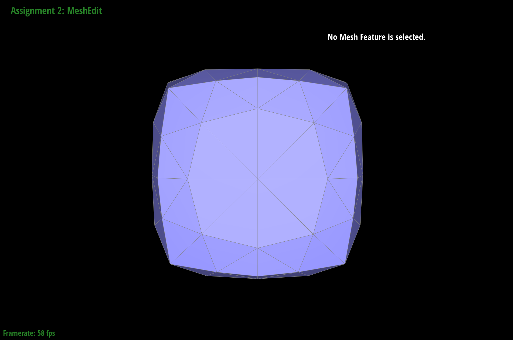

Overview
In this project, we implemented Bezier curves and Bezier surfaces using de Casteljau’s algorithm, implemented mesh operations (including edge flip and edge split) utilizing the Half-Edge data structure, and implemented loop subdivision which is used for mesh upsampling. After finishing this project, we are able to load and perform basic operations to COLLADA mesh files (.dae). An important lesson that we learned from this project, especially from part 4 and 5, is that sometimes a brutal force method may seem to be time consuming but could actually turn out to save our time.
Section I: Bezier Curves and Surfaces
Part 1: Bezier curves with 1D de Casteljau subdivision
de Casteljau’s algorithm allows us to create smooth Bezier curves from the defined control points x0…xn-1, and a parameter t which defines the relative location between xi and xi+1. By iteratively applying linear interpolation, lerp(pi, pi+1, t) = (1 − t)pi + tpi+1, until we are left with a single point to get f(t) on the Bezier curve. In our implementation, the function evaluateStep(...)performs one level of interpolation when it is called. We used the lerp function to find the intermediate points (when size of the points is greater than 1)or the final interpolated vector (when the size of points is less or equal to 1, which means that we reach the single interpolated point on the Bezier curve).
|
|
|
|
|
|

|
|
|
|
|
Part 2: Bezier surfaces with separable 1D de Casteljau subdivision
We can use the de Casteljau algorithm to evaluate surface position corresponding to (u,v)
by evaluating point u on every Bezier curve in u. This gives control points for the moving Bezier curve
(see the blue curve on the left image below). Then, we can apply the 1D de Casteljau algorithm again to evaluate point v on the moving curve.
In our implementation of evaluateStep(...), given a set of 3D points and a parameter t, we similarly used linear interpolation
to find the intermediate points or the final points. It is the helper function used for evaluating the “moving”
Bezier curve thoroughly.
For evaluate1D(...), we called evaluateStep(...)repeatedly until we reached the final condition
(the single point).
For the evaluate(...) function,we first called evaluate1D(...) with parameter u in order to find every
control point to form the blue curve. Then, we evaluated these control points using the input v and returned
the final result.

|
|
Section II: Sampling
Part 3: Average normals for half-edge meshes
In part 3, we implemented the area-weighted vertex normals at vertices in order to make the shading of the surface smoother. We utilized the Half-Edge data structure to iterate over all the triangles (faces) that are incident to the given vertex. For each triangle, we started from the given vertex v0 and used its half-edges to get the other two vertices in the triangle, v1 and v2. Then, we found the vectors representing two edges of the triangle by computing v1 minus v0 and v2 minus v0. We found the area-weight normal of that face by taking the cross product of the two edges (the magnitude of the cross product is actually two times the area of the face, but since we would perform a normalization, this does not affect our final result). The area-weight normals of all the faces were added together and normalized, and finally the normalized result was returned as the area-weighted normal at that vertex.
|
|
|
Part 4: Half-edge flip
In part 4, we implemented the edge flip operation by reassigning the pointer of every element in the mesh that is involved in the flip operation. In the CMU guide provided on Piazza, we found two diagrams that are very helpful for the implementation of this task. Every element in the mesh before and after the flip is labeled on the two diagrams.
|
|
|
On a more detailed level, here are the steps that we took:
1. We collected all the elements according to the diagram of the labels before the flip, including half-edges, vertices, edges, and faces.
2. We checked whether the input edge is a boundary edge. If either of the adjacent faces of the input edge is on a boundary, then we simply return the input edge.
3. Then, we reassigned ALL the elements that we collected in step 1 according to the diagram of the labels after the flip.
4. Finally, we returned the edge that was flipped.
Luckily, our implementation did not have issues that needed to be debugged, and we think that it is because we followed the suggestion on the spec and reassigned the pointer of EVERY element in the mesh involved in the flip. Otherwise, it might be difficult to distinguish between those elements that are affected and those that are not. Drawing out the diagrams before and after the flip and labeling every element made it super easy to keep track of the elements in our coding process. Therefore, we would say that the most helpful implementation trick for this task is to do the pointer reassignment for every element in the simple mesh structure. At first glance, the brutal force way seemed time consuming, but it then turned out to save our time.

|
|
Part 5: Half-edge split
In part 5, we implemented the edge split operation by reassigning the pointer of every element in the mesh that is involved in the split operation, just like what we did in part 4. The difference is that we did not need to create any new elements in part 4, but we needed to create new elements in part 5. We used the diagram before the split operation from the CMU guide as a reference, and we drew the corresponding diagram after the split.
|
|
|
Here are the steps in our implementation:
1. We collected all the elements according to the diagram of the labels before the split, including half-edges, vertices, edges, and faces.
2. We checked whether the input edge is a boundary edge. If either of the adjacent faces of the input edge is on a boundary, then we simply return one of the vertices on the input edge.
3. Then, we created new elements according to the diagrams, including one vertex, three edges, six half-edges, and two faces.
4. Next, we reassigned ALL the elements according to the diagram after the split. The position of the new vertex was assigned to be the midpoint of the edge that was split.
5. Finally, we returned the vertex that was created in the split.
At first, we found there was a segmentation fault when we tried to perform the split operation. Since we did everything else exactly in the same way as part 4, we thought that the segfault was probably due to errors in the creation of the new elements. After googling the syntax online, we figured out that new elements, such as the new vertex, should be created by calling “newVertex()” instead of “Vertex()”. After fixing this bug, we were able to perform edge splits correctly with our implementation.
|
|
|
|
|
|
Part 6: Loop subdivision for mesh upsampling
1. Following the instruction, we first computed new positions for all the vertices
in the input mesh by traversing through all vertices. We set isNew variable for these vertices
to be false to indicate that they exist in the original mesh. Then, we calculate their new positions according
to their weights, see the formula on the lecture slide (see below). Here I implemented a function called computeCentroid(),
which is defined in halfEdgeMesh.h. This function is used to compute the sum of the neighboring vertex positions and stores
it in Vertex::centroid. So, we need to visit every neighboring vertex and update the Vertex::centroid to the sum.
2. Then, we computed the updated vertex positions associated with edges according to formula (3.0/8.0) * (A + B) + (1.0/8.0) * (C + D) that
calculates the position of a new vertex splitting the shared edge (A, B) between a pair of triangles (A, C, B) and (A, B, D).
Here, we used four neighboring vertices and applied weights according to the above formula.
We also created a vector to store those edges, which will be used later for splitting to make sure we only split the edges in the original mesh.
3. Then, we need to loop through every edge in the vector edges. Since splitEdge(...) returns a VertexIter,
we need to set the isNew variable of this return value to true in order to show it is newly created and not in the original mesh.
Then, we need to update the associated vertices with this splitting action. Note that in this loop,
we only want to iterate over edges of the original mesh from our vector edges.
4. Next, we flipped any new edge that connects an old and new vertex, using xor operation to check if this condition is true.
5. Lastly, we simply used another loop to traverse through all vertices and copied the new vertex positions into the final Vertex::position.
One interesting bug we had with this implementation was the beetle (see below).
|
|
|
Shown below, after performing lpop subdivision, the sharp corners and edges became smoother and round. Upsampling has this effect because we are using the weighted average of neighboring vertices to calculate the position of a newly sampled point. TWe can reduce this effect by pre-splitting some edges because splitting can make vertices closer to each other. Then, the averaging effect will not be that big because if two vertices are closer, the change in position of the vertex will be smaller, thus reducing the smoothing effect.
|
|
|
|
|
|
As shown above, the cube became asymmetric upsampling. This is because the original mesh was asymmetric in its edges, so vertices may have different numbers of neighbors (3 or 4 edges coming out of it, so we have different n values in arithmetic). Pre-processing helios alleviate the effect. We splitted every edge on the face to make the edges symmetric in every face (8 parts/face). In other words, each corner has the same number of edges coming out of it.
|
|

|
|
|
|
Section III: Optional Extra Credit
If you are not participating in the optional mesh competition, don't worry about this section!